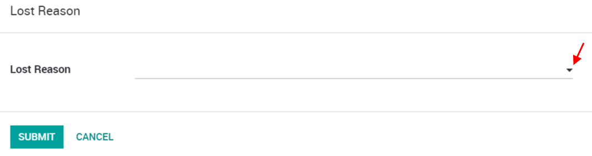
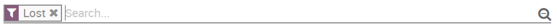
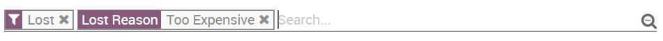
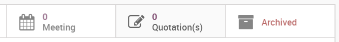
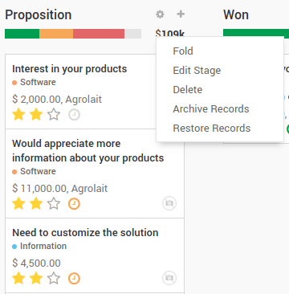
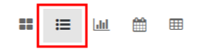
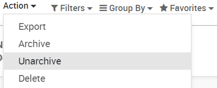

While working with your opportunities, you might lose some of them. You will want to keep track of the reasons you lost them and also which ways Odoo can help you recover them in the future.
Mark a lead as lost
While in your pipeline, select any opportunity you want and you will see a Mark Lost button.
You can then select an existing Lost Reason or create a new one right there.
Manage & create lost reasons
You will find your Lost Reasons under .
You can select & rename any of them as well as create a new one from there.
Retrieve lost opportunities
To retrieve lost opportunities and do actions on them (send an email, make a feedback call, etc.), select the Lost filter in the search bar.
You will then see all your lost opportunities.
If you want to refine them further, you can add a filter on the Lost Reason.
For Example, Too Expensive.
Restore lost opportunities
From the Kanban view with the filter(s) in place, you can select any opportunity you wish and work on it as usual. You can also restore it by clicking on Archived.
You can also restore items in batch from the Kanban view when they belong to the same stage. Select Restore Records in the column options. You can also archive the same way.
To select specific opportunities, you should switch to the list view.
Then you can select as many or all opportunities and select the actions you want to take.
See also